Halo, saya
Halo, saya Diman Fathurohman, seorang lulusan Teknik Informatika dari UIN Sunan Gunung Djati Bandung yang memiliki ketertarikan mendalam pada Software Engineering, Full-Stack Web Development, dan Artificial Intelligence.
Saya memiliki rekam jejak dalam merancang serta membangun aplikasi web end-to-end, mengembangkan solusi berbasis Machine Learning dan Computer Vision, serta aktif melakukan riset teknologi melalui proyek akademik. Tidak hanya berfokus pada aspek teknis, pengalaman luas saya dalam organisasi mahasiswa — termasuk memimpin himpunan mahasiswa — telah mengasah kemampuan kepemimpinan, komunikasi strategis, pemecahan masalah, dan kolaborasi tim lintas disiplin secara efektif.
Perjalanan saya di dunia perangkat lunak diawali dari penguasaan ekosistem web seperti Laravel, Tailwind CSS, dan MySQL. Seiring berkembangnya minat di bidang kecerdasan buatan, saya aktif melakukan riset NLP (Word2Vec & K-Means), membangun platform EdTech kolaboratif, serta melakukan pemrosesan data visual menggunakan PyTorch dan CNN.
Based in Bandung
Software Engineering
Dua fondasi — eksekusi teknis yang rapi dan pemikiran akademis yang analitis — dibuktikan lewat angka dan hasil kerja berikut.
6+
Proyek Software, AI & Mobile
3
Publikasi & Riset Ilmiah
9
Sertifikasi Profesional
3+
Tahun Aktif Berorganisasi
Rapi, sistematis, berpatokan pada arsitektur bersih, dan fokus pada solusi masalah teknis end-to-end.
Terbiasa merancang eksperimen, mempublikasikan riset ilmiah, serta mengukur hasil secara kuantitatif.
Terbukti memimpin organisasi mahasiswa, komunikatif, dan terbiasa berkolaborasi lintas divisi.
Mulai dari platform edutech, jurnal ilmiah Machine Learning, sistem presensi web, riset Computer Vision, hingga aplikasi mobile.
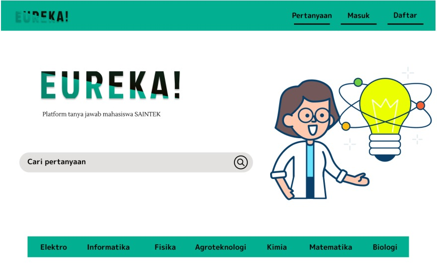
Platform web interaktif tempat berdiskusi dan berbagi materi kuliah antar mahasiswa SAINTEK (Informatika, Elektro, Fisika, Matematika, Biologi, Kimia, Agroteknologi). Dikembangkan secara iteratif menggunakan metodologi Agile.
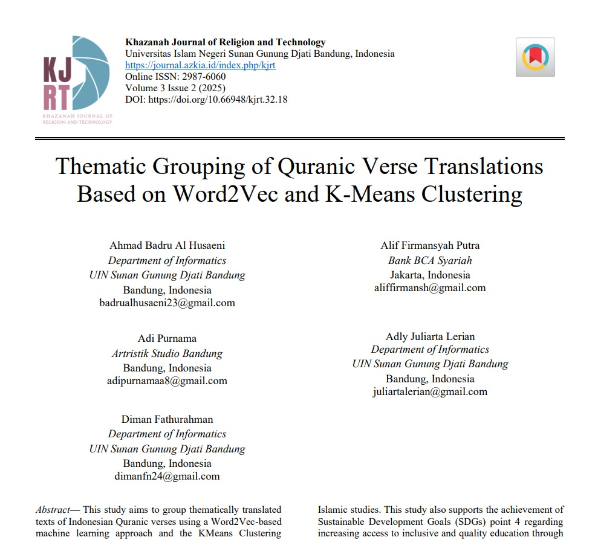
Riset publikasi ilmiah pada Khazanah Journal of Religion and Technology (KJRT). Mengembangkan pendekatan Machine Learning berbasis Word2Vec dan algoritma K-Means Clustering untuk mengelompokkan terjemahan ayat Al-Qur'an secara tematik.
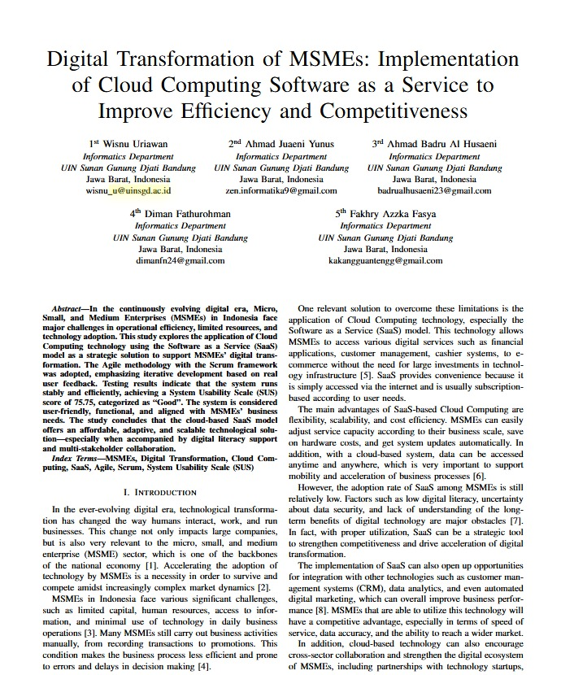
Riset ilmiah mengenai implementasi perangkat lunak berbasis *Software as a Service* (SaaS) menggunakan metodologi Agile Scrum untuk efisiensi UMKM. Pengujian menggunakan *System Usability Scale* (SUS) menghasilkan skor 75.75 (Kategori Good).
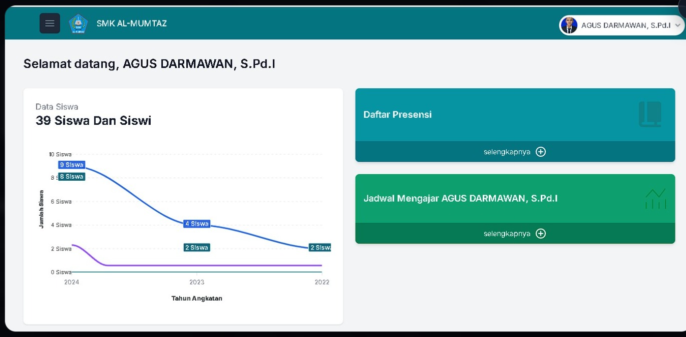
Aplikasi web manajemen presensi berbasis Full-Stack Laravel. Dilengkapi portal khusus guru untuk input presensi, rekapitulasi data otomatis per angkatan, jadwal mengajar, dan visualisasi statistik.
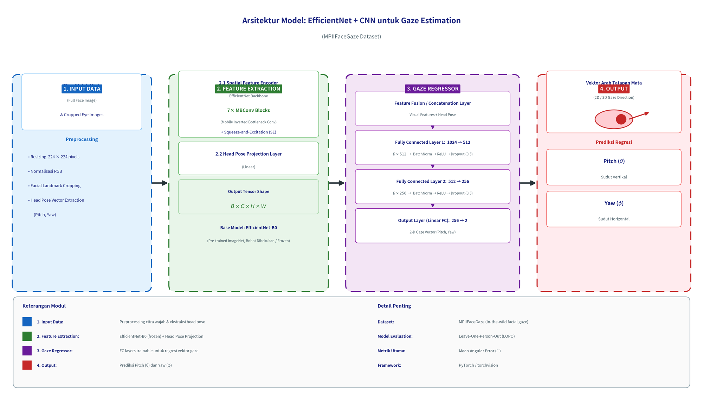
Riset skripsi yang membangun model Deep Learning untuk mengestimasi arah tatapan mata berbasis Convolutional Neural Networks (CNN) dan arsitektur EfficientNet menggunakan dataset MPIIFaceGaze.
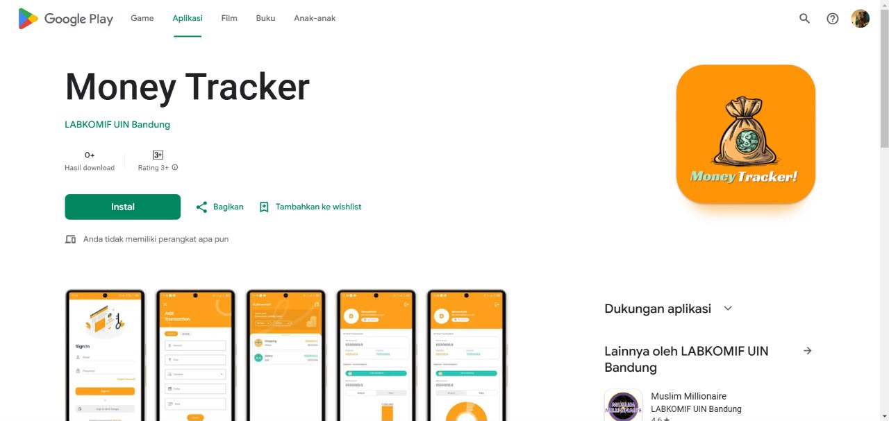
Aplikasi pengelolaan keuangan pribadi berbasis Android. Memiliki fitur otentikasi akun, pencatatan transaksi masuk dan keluar, pengkategorian, serta ekspor data transaksi.
Memimpin kepengurusan himpunan mahasiswa Teknik Informatika secara menyeluruh, mengoordinasikan berbagai program kerja, serta menjadi penghubung utama antara mahasiswa dan pihak birokrasi kampus.
Mengelola administrasi bidang, menyusun laporan kegiatan, serta membantu menyukseskan program kerja internal maupun eksternal di bidang minat dan bakat mahasiswa.
Berpartisipasi aktif dalam menyusun dan mengeksekusi berbagai event olahraga serta seni untuk mempererat kebersamaan mahasiswa informatika.
Bertanggung jawab penuh sebagai host dan pengelola konten media kreatif, membangun diskusi interaktif, serta memproduksi konten informatif seputar kehidupan kampus dan teknologi.
Terlibat dalam tim penyelenggara acara teknologi dan developer gathering untuk memfasilitasi kolaborasi serta berbagi pengetahuan seputar tren teknologi terkini.
Kombinasi ekosistem web modern dan tumpukan riset Machine Learning yang biasa digunakan dalam proyek sehari-hari.
Rangkaian sertifikasi di bidang data, jaringan, basis data, dan bahasa yang diperoleh sepanjang masa studi.
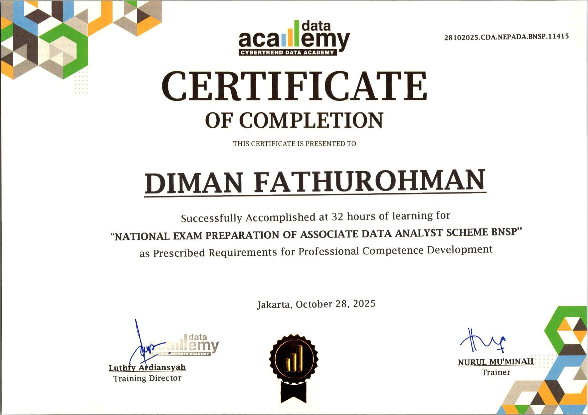
Sertifikasi kompetensi profesi yang diterbitkan oleh LSP Sains Data Dan Kecerdasan Buatan Indonesia, mencakup kompetensi analisis data tingkat menengah.
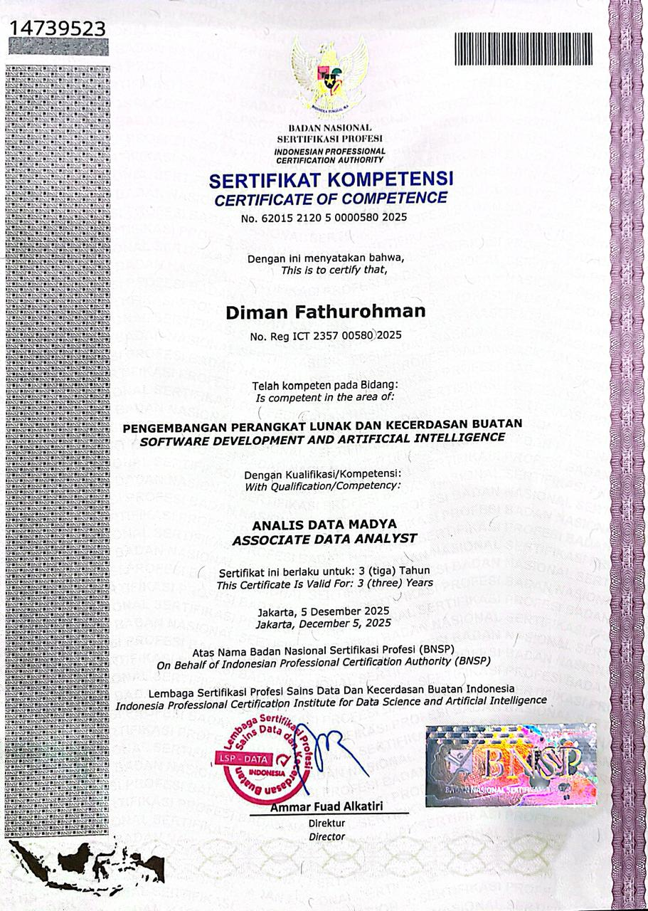
Program persiapan uji kompetensi nasional skema Associate Data Analyst yang diselenggarakan oleh Badan Nasional Sertifikasi Profesi (BNSP).
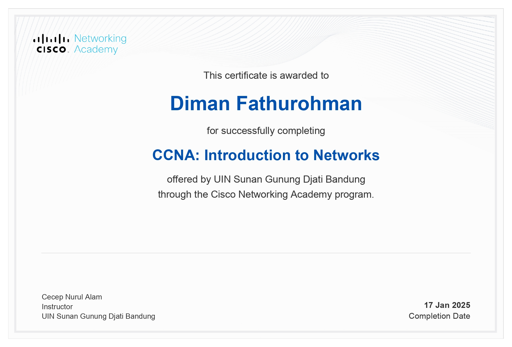
Sertifikasi dasar jaringan komputer dari Cisco Networking Academy, mencakup topologi, protokol, dan konfigurasi perangkat jaringan.
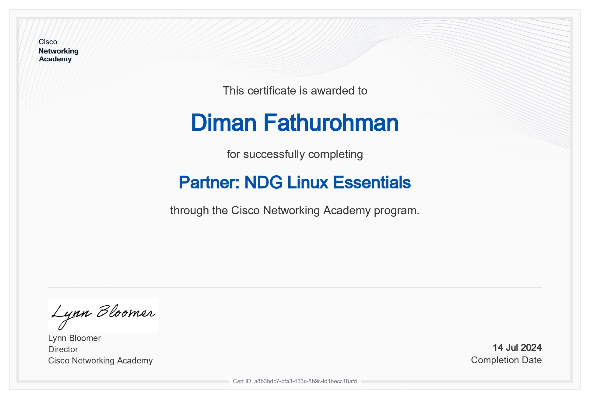
Sertifikasi dasar sistem operasi Linux dari Cisco Networking Academy, mencakup perintah shell, manajemen file, dan administrasi dasar.
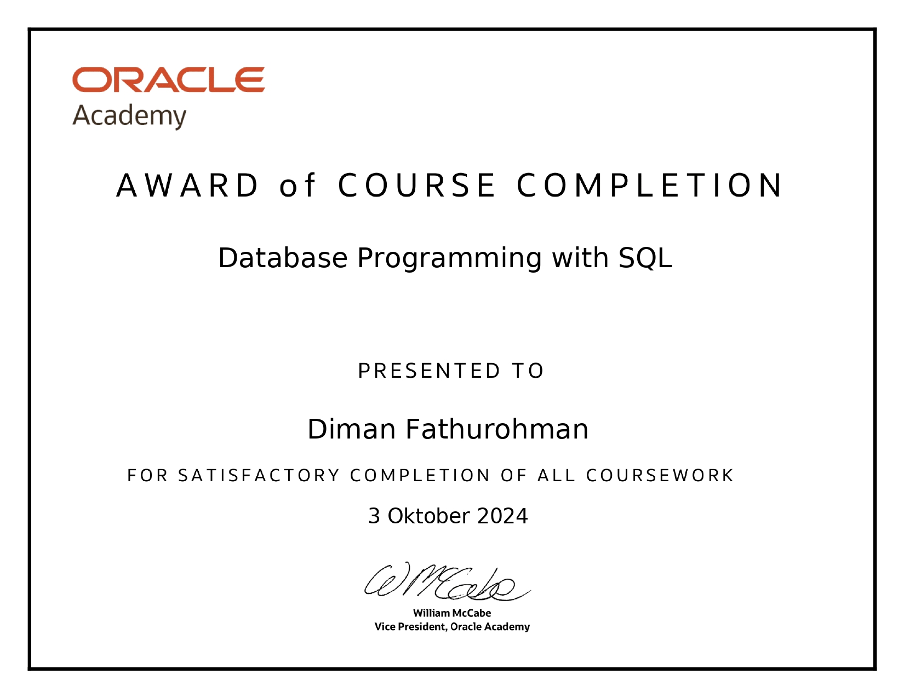
Sertifikasi pemrograman basis data menggunakan SQL dari Oracle Academy, mencakup query, manipulasi data, dan desain skema relasional.
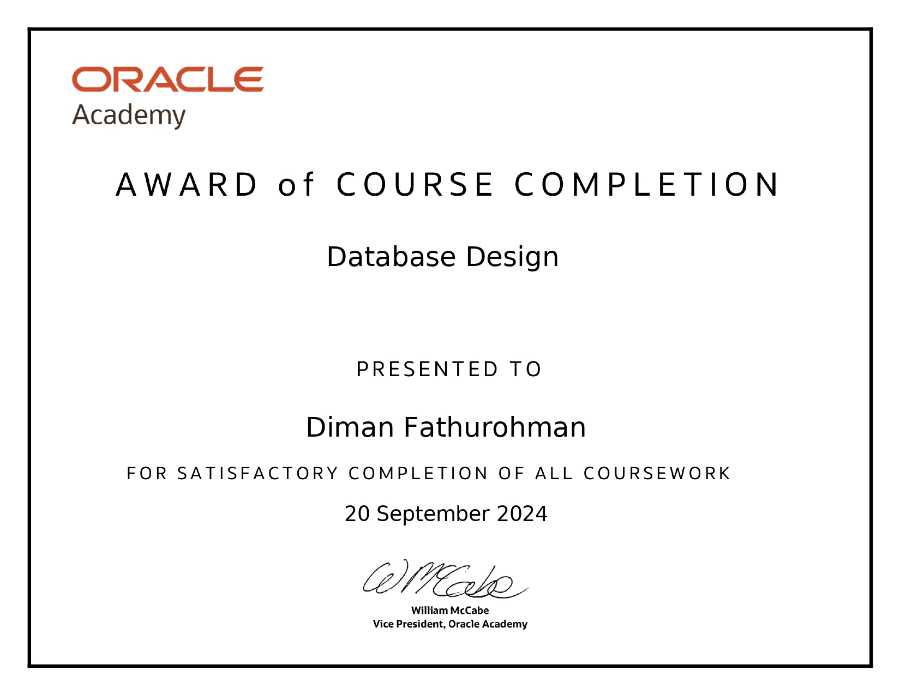
Sertifikasi perancangan basis data dari Oracle, mencakup pemodelan data konseptual, normalisasi, dan perancangan skema.
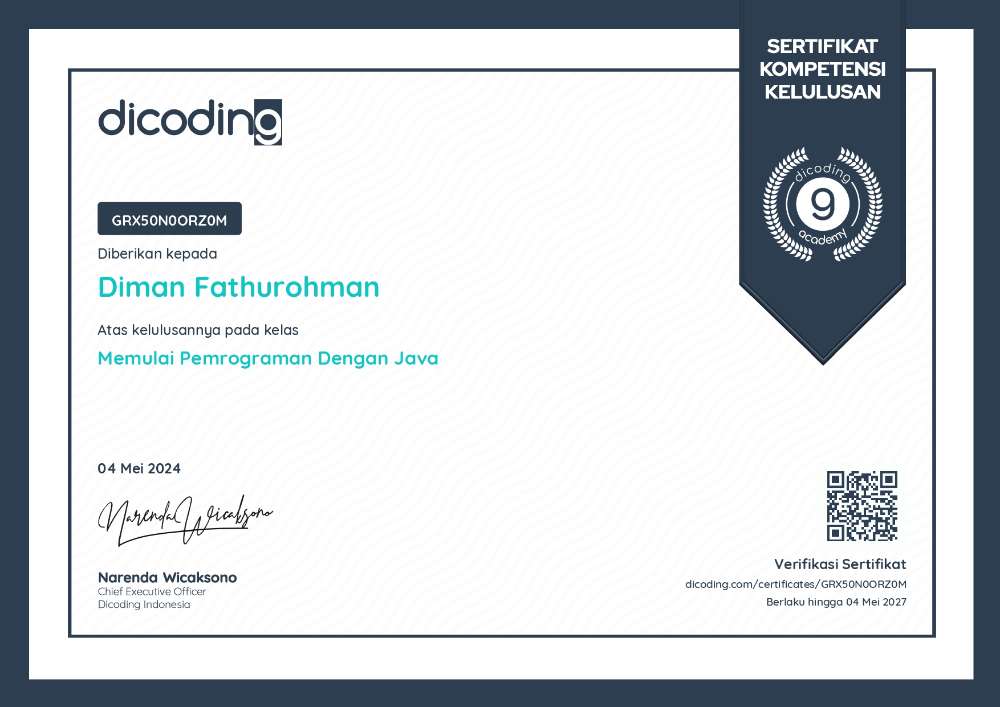
Sertifikasi dasar pemrograman berorientasi objek dengan Java dari Dicoding Indonesia, mencakup sintaks, struktur data, dan konsep OOP.
Pelatihan dan sertifikasi kompetensi Microsoft Excel dari PTIPD UIN Sunan Gunung Djati Bandung untuk pengolahan data spreadsheet tingkat lanjut.
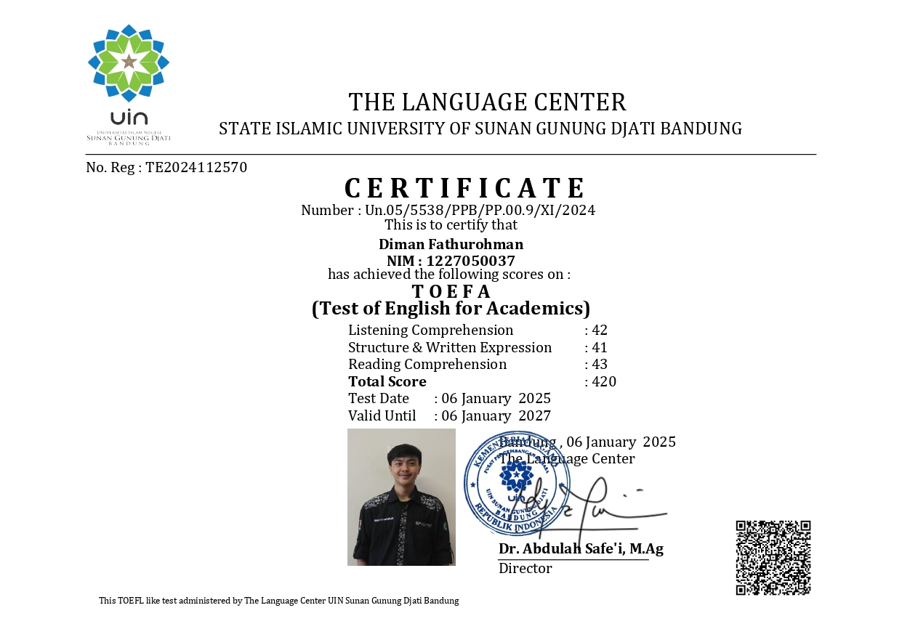
Sertifikasi kompetensi bahasa Inggris dari Language Center UIN Sunan Gunung Djati Bandung yang menilai kemampuan komunikasi untuk keperluan akademik dan profesional.
Terbuka untuk diskusi, kolaborasi proyek, maupun peluang kerja. Klik salah satu ikon di bawah ini.